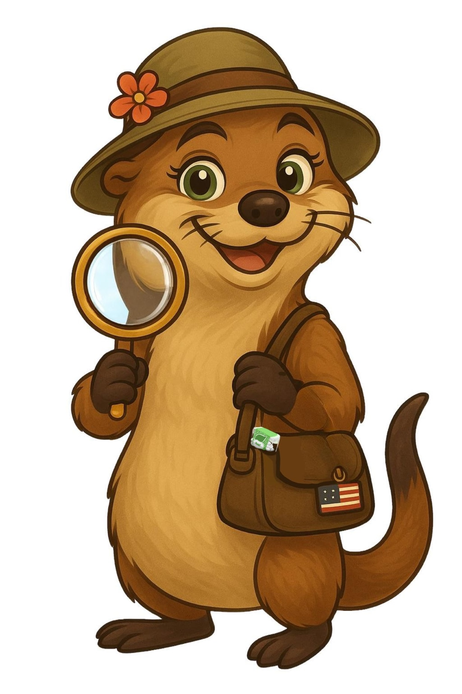
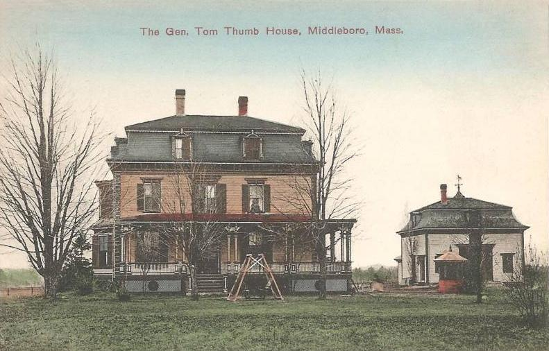
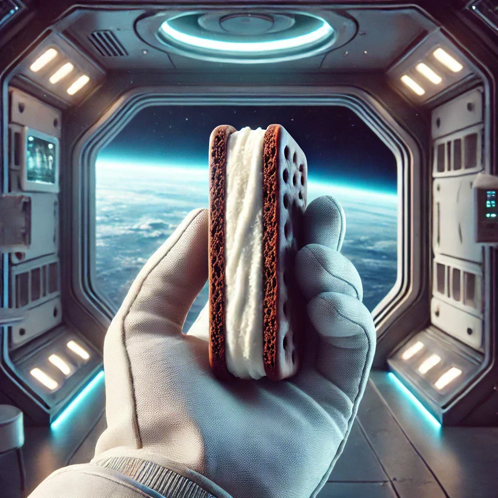

The Coin That Flips the Super Bowl
Every Super Bowl coin is born on Florida's Space Coast, where The Highland Mint transforms craftsmanship into history — and fans can own a piece of the game's first moment.
Read the story →
Sharing the good around us.
Until the gifts arrive, we're sharing the stories that make each place special — because meaning comes before merchandise.
Every Super Bowl coin is born on Florida's Space Coast, where The Highland Mint transforms craftsmanship into history — and fans can own a piece of the game's first moment.
Read the story →
Discover the inspiring story of General Tom Thumb and Lavinia Warren — from small-town Massachusetts to global stardom under P.T. Barnum. Explore their 19th-century fame, marriage, and legacy.
Read the story →Discover the incredible story of the Windover People — a 7,000-year-old community preserved in a Brevard County, Florida pond. From ancient textiles and tools to modern rockets on the Space Coast, this region's journey reveals a place shaped by curiosity, innovation, and discovery.
Read the story →
From a NASA experiment to a nostalgic treat, discover how freeze-dried ice cream transformed from a space-age idea into a sweet symbol of curiosity and creativity still made in Colorado today.
Read the story →Hi, I'm Bea — short for Beacon, because I love to shine a little light on the beauty that's already around us.
With my green eyes and a magnifying lens, I explore towns, workshops, and creative spaces across America — discovering what makes each place special.
Sometimes it's a handcrafted piece, sometimes a local invention, a collectible coin, or a small innovation that puts a community on the map. Each find tells a story of creativity, pride, and the spirit of its place.
Think of me as your travel buddy and storyteller — helping you uncover authentic creations that share the good around us, one discovery at a time.
Travel through the places behind our stories.
Explore the Map